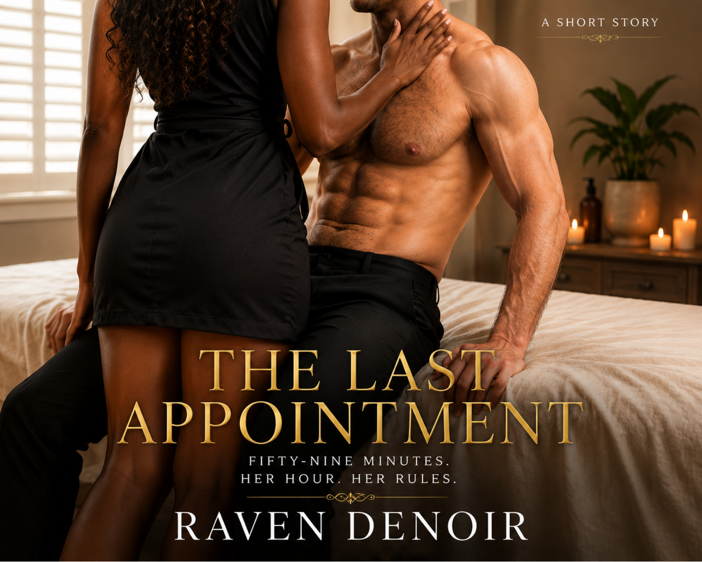

The Last Appointment
"He booked under a fake name. She never forgot his real one."
Exclusive Newsletter Read
For mature readers 18+ only.
The Last Appointment
The ten o'clock booked under the name M. Webb, paid cash in advance, declined the intake call, and requested her by name.
Noelle Marchand read the booking twice and told herself it was nothing. Cash-in-advance men came in two varieties, and she had spent ten years building a practice that filtered out both. Referral only. Intake call mandatory. Her name never listed anywhere a stranger could find it. And yet here was a stranger who had found it, who had asked for her by name with the ease of ownership, and who had paid triple her rate for the privilege of skipping every question she would have used to turn him away.
She should have cancelled. Her hands knew it before she did; they hovered over the confirmation button a full three seconds, and her hands were never wrong about bodies, and a booking was just a body that hadn't arrived yet. But her studio manager had gone home at eight, the deposit was already cleared, and Noelle had a policy about fear that she'd written in her own blood a long time ago: it didn't get a vote inside her building. She'd paid too much for the building.
So she prepped the room as she prepped every room, which was to say perfectly. Table warmer on. Linens folded back at the angle that told a client somebody exact was about to put hands on them. She lit the one candle she saved for last appointments, cedar with smoke under it, because eucalyptus after nine o'clock smelled clinical and the final hour of her day deserved better.
The front chime sounded at ten sharp. Cash men were never punctual. She filed that away with everything else that was wrong about this and kept her voice level.
"Shoes off at the door, Mr. Webb. Robe's in the changing room, water's on the console. I'll need you face down when I come in."
"You still give instructions like the room belongs to you."
Ten years of strangers' voices had passed through this studio, and her body sorted every one of them into client or threat before her mind got involved. This voice bypassed the sorting entirely. This voice went straight down her spine and lit up a corridor of rooms she'd sealed off five years ago, and she stood at her oil station with her back to the hall and understood that she could name the cologne he was wearing before she turned around, because she'd bought it for him.
She turned around.
Calder Hale stood in her doorway like the last five years had been a rumor. The charcoal coat was new and cost more than her first six months of rent. The silver at his temples was new. The lines carved in around his mouth were new, the specific kind that grief cuts and nothing sands out. His eyes were not new. His eyes were the exact problem they had always been, grey and patient and fixed on her like she was the only solvent thing in a burning building, and her body, her stupid loyal body, recognized the look and warmed to it before she could issue the veto.
"The room does belong to me," she said.
"I know. I read the article. Marchand Bodyworks, appointment only, two-year waitlist." He stepped inside and let the door swing shut behind him, and the click of the latch was very loud. "You built it."
"I built a lot of things after you left. Turns out I had the time."
He absorbed that without flinching, and the lack of flinch told her more than an apology would have. A man who flinches came to defend himself. This one had come to bleed.
Fine. She had an hour, a table, and ten years of knowing exactly how much pressure a body could take. She could work with a man who came to bleed.
Her hands stayed steady while the rest of her rioted, because that was the first trick the trade ever taught her, back at twenty-two, working on strangers at a chain spa while her mother's last eviction played out in the parking lot. The hands don't get to know what the rest of you knows. The hands just work.
"You have two options, Mr. Webb." She said the fake name with a scalpel's care and watched it land somewhere soft. "You can walk back out that door, and I keep your deposit for my trouble. Or you can get on my table, and for sixty minutes you're a body and I'm a professional, and when the hour's over you leave and you don't come back."
"And if I want to talk?"
"Then you should've called five years ago. Same number. It never changed." She let that sit exactly long enough. "The table or the door, Calder."
He held her eyes while he decided, and she made herself hold his, because looking away first was a language and she refused to speak it. Then he took off his coat, and folded it over the chair with the unhurried economy of a man laying down a weapon, and walked past her toward the changing room close enough that the heat off his body crossed the space between them. She let it arrive unanswered.
***
She'd had a thousand bodies under her palms since his. She'd forgotten none of his anyway.
That was the indignity she'd never confess to a living soul: muscle memory ran both directions. He lay face down under her linen, and her hands found the old geography without asking her permission first. The dense slope of his shoulders. The knot he'd always carried under the right scapula, souvenir of a man who slept wrong on planes because he refused to recline into anyone's space. The long channel of the spine she used to trace at two in the morning while he pretended to be asleep and she pretended not to know he was pretending. Cedar oil warmed between her palms. The candle threw its small gold ring on the ceiling. His breathing had gone deep and deliberate, too controlled to be rest, the breathing of a man counting his way through it.
Good, she thought. Count.
She dug her thumb into the knot without mercy, and felt his whole back brace and then, deliberately, refuse to.
"You're angry," he said into the face cradle.
"I'm working. There's a difference. If you want anger you'll have to book a second appointment, and I'm full through spring."
"Noelle."
"Pressure okay?" Pure clinician. She could do clinician in her sleep. "Most clients find this depth uncomfortable."
"Most clients didn't earn it."
Her hands kept moving because her hands were professionals even when her chest was not. She worked his shoulder in silence and let the silence do her talking, and it talked, and he lay there and took it, and the taking was its own provocation. He'd always been able to outlast a quiet room. It was one of the first things she'd loved about him, back when she was twenty-nine and broke and he'd sat in her tiny first studio with a patience she'd never seen on a rich man, never checking his watch, never filling the air, just listening, like her sentences were being entered into a ledger somewhere and would be honored later.
He had honored none of them.
She moved down his back and her thumb found new terrain. A scar, four inches, ridged, surgical, riding the lowest rib on the left. Her hand stopped before she authorized it to.
"Splenectomy," he said. "Three years ago. Car accident."
"I didn't ask."
"You stopped."
"Scar tissue changes how I work the fascia." A lie, delivered without a seam. She adjusted her pressure and resumed. "Turn your head if the cradle's straining your neck."
"You want to know if I was alone in the car."
"I want you to be a body on my table, Mr. Webb. Bodies don't narrate."
He turned his head anyway, cheek to the linen, and one grey eye found her in the candlelight, and the eye was worse than the voice. "I was alone. I was alone for most of it, Noelle. That's not a bid for sympathy. It's just the accounting."
"The accounting." She set her forearm into the long muscle beside his spine and leaned in slow, controlled, all the way to the honest edge of what tissue can take, and listened to his breath flatten under the weight. "Okay. Let's do accounting. Five years ago I told you a thing I had never told another living soul. Six days later your number was disconnected, and your building had a new doorman with a list, and my name was on it. That's the ledger. There's no column in it for whether you were lonely in a car."
"There's a column for why."
"No." She lifted her arm off him and reached for the oil, and the pump clicked twice in the quiet, obscenely domestic. "There isn't. I closed that column myself. Asking why is a debt, Calder. It keeps a door open in you that the other person can walk through whenever they feel like paying. I don't carry debt anymore. I own everything in my life outright." She set her hands back on him, lighter now, which was its own kind of cruelty. "Including this hour. Of which you have thirty-one minutes."
He didn't answer. The city hummed at the windows, indifferent. She worked down the left arm, forearm, the heel of his hand, territory she'd once fallen asleep holding, and if her thumbs pressed harder into his palm than the muscle strictly required, that was between her and the palm.
It was his hands that gave him away.
They were folded under the cradle, obedient, exactly where a client's hands belonged. But twenty minutes into the hour they curled, slowly, into fists, and then flattened by visible force of will, and then curled again, and she watched the cycle repeat and understood in one hot drop what she was actually looking at. He wasn't relaxed. He had never once been relaxed. He was lying face down under the hands of the woman he'd left, holding himself still through what those hands were doing to him, and the stillness was costing him more than the triple deposit, and he was paying it on purpose. An hour of her touch, served in full. Penance by the minute.
The heat of that went through her before the anger could screen it, straight down, indecent, and she despised the heat more than she despised him.
"Flip," she said, and her voice came out lower than clinician. "Face up. I'll hold the linen."
He turned over under the sheet, and she made the mistake of meeting his eyes at close range, and the mistake was severe.
Five years, and the man was looking at her like both things were true at once, like no time had passed and like every day of it had been recorded somewhere on his body at cost. Nobody had looked at her that way since him. She had engineered her whole life to make sure of it. She had arranged her existence into a fortress of things that could not leave her because she owned them, the building, the practice, the waitlist, the name on the door, and he lay on her table in the middle of all of it and looked at her like the fortress had a door he could see and she couldn't.
"Noelle." Quiet. "Ask me why."
"No."
"Then ask me how I found you. You'll want that one."
The delivery snagged her. Flat, pre-paid, a card he'd been carrying so long the edges had worn round. She straightened up off the table and reached past him for the clipboard on the console and read the intake form again, actually read it. M. Webb. Cash, no referral. And her studio was not searchable. Her studio was two years and one LLC removed from the name Noelle Marchand on any public paper, and she had built it that way brick by deliberate brick, in the exact shape of a woman who never wanted to be found by exactly one man.
The clipboard came down on the console harder than she meant it to.
"There are no walk-ins here. There's no listing. Who is Webb?"
"Nobody. A name my lawyer books restaurants under."
"Your lawyer." She stepped back from the table, and the step was retreat and they both knew it, and she hated that he knew it. "How long have you known where I was?"
"Eight months."
"Eight months."
"It took two years to find you." He sat up, and the linen pooled at his waist, and he made no move toward her at all, which was somehow the most aggressive thing he could have done. "It took eight more months to get through that door. I've had this appointment booked and cancelled four times. Ask my lawyer. He thinks Webb is the most indecisive man in New York."
The fury, when it arrived, was almost a relief. It came up clean and bright and organized, and it burned off the heat and the grief in one pass, and she let it all the way off the leash because it was the only thing in the room she trusted.
"You hunted me." Low. She didn't shout. Her mother had shouted, at doors, at landlords, at men in parking lots, and Noelle had built her entire voice in opposition. "I stood in this room tonight and thought, of all the luck, the last client of the night. Fate with a sick sense of humor. But there's no fate in this room. You hired people. You found a woman who had made herself unfindable, and you watched her building for eight months, and then you paid cash to lie down under her hands like, what. An installment plan? Penance by appointment?"
"Yes."
The bare agreement knocked her a half step sideways. No garnish on it. No self-defense.
"You paid triple," she said, "to be touched by the woman you left."
"I paid triple to be in the room while she decided if I deserved to be." He came off the table then, sheet abandoned, trousers still on, and stood barefoot on her floor with the surgical scar pale along his ribs and his chest moving faster than his voice let on. "You won't ask why. All right. I'll say it unasked, and you can bill me for the overage. My father's company was ninety days from collapse and he'd hidden it from everyone but the lawyers. There was a merger that would save it, eleven hundred jobs, his name, the whole cathedral, and the merger came with terms, and one of the terms was the majority partner's daughter. A marriage clause. Medieval as it sounds. Drafted like a shipping contract, signed like one."
"And you signed."
"I signed on a Tuesday." He held her eyes and did not soften it. "And I'd like to tell you I did it for the eleven hundred jobs. That's the version I told myself for the first year, and it let me sleep. But part of me wanted what came with the signature. The chair. The name on the letterhead. My father finally looking at me like I was worth what I was going to inherit. The jobs made it noble, Noelle. Wanting it made it easy."
She stared at him. She had braced for machinery, for the polished sad story rich men kept in the glove box, and he had handed her an accounting with the flattery stripped off, and she didn't know where to put it.
"So you weren't cornered."
"I was cornered. And I still ran toward the corner, because the corner came with a crown." He let it sit there between them, ugly, unretouched. "I came to see you that Friday. Three days after I signed. The last night. You remember the last night."
She remembered candlelight not unlike this. She remembered his shoulder under her mouth and the unfamiliar sensation of a locked room in her opening, because she had told him about her mother that night, the leaving, the six apartments in four years, the lesson she'd taught herself before she was twelve: never ask anyone for anything, because asking was how you found out your exact market value, and it was always lower than you'd priced yourself. And then, because the room was open and he was in it, she had asked. One word, at two in the morning, pressed into his skin like a seal into wax. Stay. The only time in her adult life she had ever said it to anyone.
She'd felt him go rigid under her mouth and told herself it meant the word had landed.
It had landed. He'd simply already sold the ground it landed on.
"You knew." The floor felt untrustworthy. She kept her voice off the rocks by pure will. "That night. I asked you to stay and the ink was already dry. You let me open the one door I had. You stood in the doorway and looked around and left with the layout."
"I came to say goodbye and I was a coward twice over. Too much of one to say the word, and too much of one to deny myself a last night I hadn't earned." His voice stayed level and it cost him; she could see the price posted in his throat. "I have nothing to file in my own defense. Five years and I never found a document worth submitting. What I have is the rest of it. The marriage never happened. I broke the clause eighteen months in, before there was ever a wedding date, and it should have been eighteen days, and that's on the ledger too, because she was blameless and my stalling cost her a year and a half of her life alongside mine. Breaking it cost me forty percent of the inheritance and the last two years of my father speaking to me, and I would pay it again slower just to enjoy it more. Then he died. I buried him. I rebuilt the company into something he wouldn't recognize, which was the point. And then I spent everything quiet money can buy looking for a woman who had made herself impossible to find, and it still took two years, because you are very, very good at building walls, Noelle. You're the best I've ever been shut out by."
"Why look at all." Her fortress, paper. Her voice, steady, a miracle under the circumstances. "You could have anyone. Your whole world is full of women who'd sign whatever your lawyers slid across the table."
"Because in thirty-eight years I've been touched by exactly one person who wasn't holding an invoice," he said, "and I left her. And there is no version of any life I build, no company, no city, no year, that stops being about that. Believe me. I've run the experiment at scale."
The room got small and hot around them. The candle spat once and steadied.
"I hate you," she said, testing the rail before she trusted it with her weight.
"That's fair."
"I burned everything you ever gave me. The coat. The first editions. I watched them go into a barrel in a parking lot in Queens and I felt nothing."
"Good."
"I don't forgive you." She crossed the floor to him, one stride, two, and her hands, her traitor professional hands, came up and landed flat on his bare chest, and under her right palm his heart was going like a man running for a closing door. The discovery detonated low in her. He wasn't calm. He had never once tonight been calm. The stillness was a costume, and she had her hands on what it was hiding, and it was hers, it had apparently been hers this whole time, slamming away under all that composure across five years and two thousand miles of silence.
"I know what this is," he said, very low.
"Tell me what it is."
"An appointment." His hands stayed at his sides, fists now, held there. "I don't leave until you say time's up."
She kissed him with her fingers wrapped in the chain of that sentence, and it was not soft, and he opened for it and gave her the fight and let her win it, and winning tasted like cedar smoke and five wasted years and whiskey he'd needed just to make it through her door.
***
Her rules. She laid them down against his mouth, one by one, and he obeyed every single one, and his obedience was the most erotic thing that had ever happened in this room, and this room had heard some claims.
"Hands on the table." He backed up until the padded edge met him and gripped it, and his knuckles went pale around it immediately, which told her exactly how close to the surface everything in him was running. She took his mouth again, slower now, thorough, a documented search. She kissed the hinge of his jaw. The pulse under it, going hard. The surgical scar along his ribs, which made his whole frame lock and shudder, and she filed that away with the ruthlessness of a woman who intended to use it. "You don't touch me until I say. You gave up the right to reach for me. Tonight you get it back one piece at a time, or not at all. Those are the terms. Sign or leave."
"Signed." The word came out gravel. "Noelle. Whatever pace you want. I've got nowhere to be for the rest of my life."
She stepped back out of his reach on purpose, watched his hands strangle the table edge to keep from following, and unzipped her work dress and let it fall.
She'd rehearsed this in her head over the years more times than she'd ever admit under oath, always as an execution: herself cold, finished, untouchable, showing him in one frame the entire inventory of what he'd priced and walked away from. The live version ran on different current. His gaze went over her like the first drink after a decade dry, slow because rushing would waste it, starving and disciplined at once, and there was nothing smooth in his face, no boardroom left in him at all. The man ran a nine-figure company. He looked one exhale from his knees.
"Say something," she said.
"I remembered wrong." His grip flexed on the table. "Five years I've been remembering you, every night, in forensic detail, and I still had it wrong. You're..." He shook his head once, out of language. "There's no sentence that survives contact. Come here and I'll do better with my mouth."
"Bold, for a man who isn't allowed to touch."
"You said hands." A dark flicker crossed his face, the first ghost of the humor she used to love, back from the dead and asking to be let in. "You didn't say mouth."
So she came to him and took his mouth for that, and unbuckled his belt while his breath went ragged against her lips and his hands performed their agonized fidelity to the table. She freed his dick and closed her fingers around it, hot, heavy, already slick at the crown, and the sound that came out of him was five years old at minimum, dragged up from storage.
"Look at me." He did. She stroked him slow, root to crown, thumb rolling through the slickness, and watched five years of composure die in stages behind his eyes. "The night you left. Did you already know what you were walking away from, or did you have to learn it after?"
"Knew it walking out the door." No hesitation, voice fraying at the edges. "Learned it worse every year since. I'd wake up reaching for you. Eighteen months chained to that contract and I never once touched her, couldn't, it would have felt like spending your money."
She hadn't known she needed that until it hit her bloodstream and burned. Her grip firmed and his hips punched forward into her fist before he caught himself, jaw grinding with the effort of ceding the pace back to her.
"On the table," she said. "On your back."
He went. The table was built for bodies and held him without complaint, and she stripped his trousers off and stood over him for one long moment, letting him lie there and feel the full inversion, the one who waits, the one who is laid out and read, the one who doesn't know if the next minute holds mercy. Then she shed the last of her own clothes, took his jaw in one oiled hand, and climbed up over him.
"The rules change when I say they change." She lifted his right hand off the table edge and pressed it flat over her breast, and the contact pulled one long breath out of both of them at once, an even trade, the first of the night. "That one's yours again. Earn the rest."
He earned it. His thumb found her nipple with a fluency that five years hadn't dulled, reverent and unhurried and not remotely timid, and when she leaned down and gave him mouth, he took her breast on a groan she felt travel her whole spine, worked her with lips and the careful edge of teeth until she was moving against him with no strategy left, until the slickness on her thighs was an open secret and patience stopped being an asset she held.
She rose up, took his dick in hand, and sank down onto him with no warning at all.
The stretch drove the air out of them both. He was thick and it had been a long time and she took him to the root in one slow merciless slide anyway, watching the cost of it hit him, his head going back against the table, tendons standing in his throat, her name torn out of him, sutures and all.
"Noelle. Fuck. You feel..."
"Say it. Finish a sentence for once tonight."
"Like the only place I've ever been," he ground out, "that wanted me there."
She rode him and made it worship. Slow first, deep rolling pulls, both his hands granted now and gripping her waist, guiding nothing, just holding on, a man in weather. The candle moved its light over his skin. The table voiced its professional objections. She braced her palms on his chest, right over the riot going on inside it, and took him deep and dragging on every stroke, tilting her hips until the head of his dick found the place that whited out her thoughts, and then keeping it there, greedy, her breath going to pieces above him while he watched her face like scripture he was being tested on.
"There," he said, wrecked and certain. "Right there. Take it. Take everything, that's it, that's..." His thumb slid down between them and found her clit, slick tight circles, the exact pressure she'd taught him half a decade ago, filed and kept and produced on demand, and the sound she made was nothing her studio walls had ever heard from her. "That's my girl. Come apart on me, Noelle. Five years. Let me feel every one of them."
She came first and didn't care, the release rolling through her long and vicious, and she rode him straight through the aftershocks, chasing them, clenching around him on purpose until his control tore loose of its moorings and he drove up into her from below, deep pounding strokes, one arm banding her hips to hold her to it, and finished inside her with her name in his teeth and his whole body shaking hard enough that the table registered a final objection and held.
Quiet, after. Her cheek on his chest. His heart under her ear, slowing by degrees. His hand traveling her spine, slow, memorizing.
"Time's not up," she said, because even the silence answered to her tonight.
His arm tightened across her back. "Then I'm still here."
***
The hour died somewhere behind them, unmourned, and what climbed out of its grave was not tenderness.
Her thoughts came back to her in the cooling quiet, and they came back armed. Because her body lay there loose and satisfied on the chest of a man who had hunted her for eight months, who had bought his way onto her table under a dead name, who had stood in her studio and confessed to wanting the crown more than her, and her body's satisfaction was a collaborator, and the anger stood up inside her fully dressed, like it had only ever stepped out for a cigarette.
She rose off him. His eyes opened and read the change in her face in one pass; he'd always been fluent in her weather.
"Get up," she said.
He got up, careful about it. Naked and unashamed of it, but careful.
She crossed to the console where his intake form still sat on the clipboard, M. Webb in her own receptionist's tidy hand, and she picked the thing up and held it out, evidence for the record.
"You wrote a stranger's name to get into my building. You sat in your car with your lawyer's alias and let my staff be kind to a man who doesn't exist."
"Yes."
"Come here. Hands on the console."
He came. He set his palms flat on the wood, on either side of the fallen clipboard, and the mirror above the console served her his face and served him hers, and she stood behind him where she had stood behind a thousand paying bodies and felt nothing professional whatsoever.
"You're going to watch," she said. "Both of us, the whole time. You don't get to close your eyes and feel forgiven in the dark. You look at the man who did it while it's paid for."
"Noelle."
"Was that a refusal?"
"It was your name." His grip whitened on the wood. "It's never a refusal."
She reached around him and took him in hand and he was already thickening again, five years of appetite making short work of recovery, and she worked him with slow, vindictive patience, watching his reflection lose its architecture, until he was full and aching in her fist and his breathing had gone to rags in the glass. Then she turned him around and kissed him with mostly teeth, and set her own back against the console's edge, and pulled him into her standing, one leg hooked high over his hip, the clipboard skidding to the floor where it had always belonged.
There was no worship in this one. This was the other ledger. He drove into her and she met it and returned it with interest, the console knocking the wall in a hard graceless rhythm, her fingers wound into his hair to aim his face at the mirror, at the two of them locked together and furious and magnificent, and she talked to him while he fucked her, because the anger needed a place to live and she was done housing it alone.
"Say what you chose."
"The company." The rhythm broke his voice into pieces and she collected every piece. "The chair. My father's face."
"Over what?"
"Over you." Into her throat, thrust for thrust, confession keeping time. "Over this. Over the one thing in my life that was never for sale."
"Again."
"Over you. God, Noelle, over you, and it bought me nothing, it was ash by the second year, use me for it. I'm asking you. Take it out of me."
She took it out of him. She rode the edge of the console and the force of him like a woman collecting on a judgment, and when her finish gathered she didn't announce it, just sank her nails into his shoulder and let it break, long and mean, her cry cracking flat against the studio walls. He was seconds behind her, she could feel the gathering stutter in his hips, and she closed her fist in his hair and pulled his head back and watched his eyes go wide in the mirror.
"No." Her voice was ruined and absolute. "Not this one. You don't get to finish angry, that release was mine. Yours comes later. If you earn it."
The sound he made was barely on the human register. But he went still. Shaking with the effort, forehead dropping to her shoulder, lungs heaving, hard as iron inside her and holding, obedient down to the blood.
"Good boy," she said, soft as a blade going home in its sheath, and felt the words shudder all the way through him.
***
The candle had burned to half its height by the time the anger ran out of fuel, and what waited under the anger frightened her more, because it had no edges to hold.
He'd stayed at the console until she released him, palms flat on the wood because she hadn't said otherwise, breathing his way back down, still hard, asking for nothing. When she finally stepped away he turned and looked at her, and the sight of it, a man that hungry making no move at all, keeping terms she'd set while his whole body argued against them, unlocked a door the fury had been guarding.
She was done wanting distance. What she wanted now was worse, and it had no dignity in it at all. She wanted to be convinced.
He read it off her face at a glance, as he'd read everything tonight.
"Let me," he said, low. "Noelle. Five years I've owed your body an apology, and I've been standing here all night with the only mouth that can deliver it. Let me."
She looked at him for a long moment, and let him watch her decide.
"Floor."
He went to his knees on her hardwood like the position was a promotion. It was the most expensive thing she had ever watched a rich man do, and he did it without a flicker of performance, settled there, patient, and kissed the inside of her knee first. Then above it. Unhurried, methodical, his hands resting open against the backs of her thighs and touching nothing his mouth hadn't already been granted, working upward by increments, and when she finally leaned back against the table's edge and let her stance loosen, he made a sound against her skin like a man sighting land after a long time in open water.
He apologized the way she'd forced him to confess: thoroughly, and without flattering himself. His tongue found her still tender from two finishes and he gentled accordingly, no ego in it, relearning her in real time, long flat strokes and then the focus tightening by degrees, reading her breath as she'd spent ten years reading knots under her hands, adjusting to what the body reported rather than what he wanted to hear from it. Her fingers went into his hair. Not steering. Holding on.
"Tell me if it's too much," he said against her.
"It's five years too little. Don't you dare stop."
He didn't stop. He begged instead, between everything, the words pressed directly into her flesh where she couldn't pretend not to receive them. Let me. Missed this. Missed you. Every night, Noelle. Every single night. Let me. The pleading and the pleasure braided into one continuous current until she lost track of which of them was being broken down, and the first release arrived slow, from a great depth, a lock giving up its tumblers one by one, her hand tightening in his hair while he groaned against her like the finish was his own. He kept on, softer, patient as compound interest, and built her a second one out of the wreckage of the first, and that one took her knees out from under her and took her armor with them, and she heard herself say his name with nothing on it at all, no rank, no sentence around it, just Calder, exactly as she'd said it five years ago into the dark of the last night.
He caught her when she folded. Of course he caught her. Catching her at the exact moment she couldn't stand was the one appointment he'd never missed.
***
The city outside had gone to its late shift, quiet and gold at the windows, and that was where the last of her strength walked them, because the table was work and the console was war and the floor was penance, and the only room left standing was honest.
She set her back against the cold glass with the skyline burning low behind her, sodium and amber, ten thousand windows of other people's unfinished business, and pulled him in by the jaw. There was nothing left to command. Nothing left to beg. He lifted her, her legs closing around him, the glass fogging in a ring at her shoulders, and he entered her slow and complete and neither of them said one word, because five years of language had finally spent itself, and what was left was older than talking.
It was rough and it was quiet, which she had not known could share a body. His hips drove her into the window in long heavy strokes and her nails kept their own records on his back, and the only sounds in the studio were skin and breath and the small punched-out notes she'd stopped trying to govern an hour ago. Sweat sealed them together. The glass held them both. He shifted his angle from memory alone, found the place that bowed her spine off the window, and stayed on it with the single-minded devotion of a man whose remaining purposes on earth had narrowed to one, and her fourth finish took her apart against the glass with her cry fogging the pane beside her own reflection, the city lights running through the condensation like the skyline itself had started to melt.
"Now," she managed, against his ear, wrecked, sovereign to the last. "You've earned it. Let me feel what five years did to you."
His control didn't break. It knelt. He drove up into her, deep and unguarded, four strokes losing their rhythm to what was underneath it, his arms crushing her to his chest, nothing between her and the drop but him and the glass, and finished with a sound hauled up from the foundation of him, her name buried in the middle of it, past his money, past his composure, past everything he had rebuilt himself out of, shaking against her in the window of the studio she had built out of his absence.
They stayed there a long time, sealed together, his mouth at her temple, her ear against his slowing heart, while the city minded its own catastrophes below.
***
They ended on the floor because there was nowhere left to fall.
She pulled the clean linens down off the shelf without letting herself examine why, and they built a graceless nest beside the guttering candle, and lay in it facing each other, skin cooling, her leg drawn over his hip. The last movement wasn't sex at all until, somewhere in the drift, it was: slow, half-dreamed, face to face, him barely moving inside her, less an act than a conversation neither of them would have survived out loud. Cedar and salt and burned wick. The first grey threat of morning organizing itself outside the glass. His hand traveled her spine at the speed of a man rereading a paragraph he intended to be buried with.
"Still with me?" Barely sound.
"Unfortunately."
His laugh moved through both their bodies at once, one current, no border. They finished like that, unhurried, together, her face against his and his breath coming apart at the end on a note too worn down to be called reverence and too devout to be called anything else. Afterward neither of them moved away. The candle surrendered. The dark took the room like a kindness.
He rested his forehead against hers. Once. The only time.
"Say it," he whispered, "and I stay tonight. That's the only thing I will ever ask you again, Noelle. One word. The same one."
She lay in the dark with the word in her mouth like a pulled tooth.
Stay. One syllable. She had said it exactly once in her adult life, at two in the morning, into the skin of this man's shoulder, and he had carried it out the door with the rest of his things, and she had spent five years building a life engineered to never need the word again. The studio around them was that life. The waitlist was that life. Every brick she owned outright was a version of never saying it.
She didn't say it.
He waited precisely as long as a man should wait, and not one second longer, and then he kissed her forehead and rose and went looking for his clothes in the dark, and asked her for nothing else. Which was, she understood, watching his silhouette move against the window, the first promise he had kept in five years.
***
He dressed slowly, the way men do when they're hoping for a stay of execution. She belted her robe and didn't offer one.
At the door he reached into his coat and set a card on the console, matte black, no title, no company, just a name and a number engraved deep enough to read in the dark. The kind of card that never got handed to anyone by accident.
"I'm not booking another fake appointment," he said. "I'm not going to circle you. You know everything now, the ugly parts included, and the number's real, and it doesn't expire." He held there a moment longer, the whole night still in his face. "Five years ago you asked me for one thing and I failed it. Tonight I asked you for the same thing, and you were honest with me, which is more than I was with you. So here's the only offer I have left. I'm not moving again, Noelle. Not from the city, not from the number, not from this. The next appointment's yours to make or never make."
He left before she could decide what her face was doing. The chime sounded once behind him, and the studio settled back into candle smoke and quiet, as if she'd dreamed the last four hours on her feet.
Noelle stood a long time at the console. The clipboard was still on the floor. The mirror still held the shape of everything it had watched.
Then she picked up the card, held one engraved corner to the candle's survivor of a flame, and watched it catch. The black stock burned slow and expensive, like everything else he'd ever handed her. She turned it so the fire could take the whole thing, his name going orange at the edges, curling, gone, ash settling into the little brass dish beside the oil warmers. Five years of him, closed out in a ribbon of smoke that didn't even disturb the room.
She washed her hands. Turned off the table warmer, and stood in the middle of everything she owned outright, everything that could not leave her, and understood with perfect clarity that she had built a beautiful fortress and that the word he'd asked for was never going to make it past the walls, because the walls existed specifically to stop it.
But the walls had a phone.
She picked it up and typed a number she had never once dialed and never once forgotten, seven digits surfacing whole from wherever she'd kept them buried and fed all this time, and wrote three words, and hit send before the fortress could file an objection.
Same time Thursday.
THE END
Thank You for Reading
The Last Appointment was written as a gift for the readers who ride with me. Noelle and Calder are brand new blood in the House of DeNoir, and you met them before anyone else on earth.
Want to know what happens Thursday? So do I. If enough of you demand it, Noelle and Calder get a full book. Hit reply on my email, or tell me here: Write Thursday
Still hungry tonight? Vadim and Reyna's lost night is waiting: Read King Takes Queen free
This exclusive read is for Raven DeNoir newsletter subscribers only. All rights reserved © Raven DeNoir.